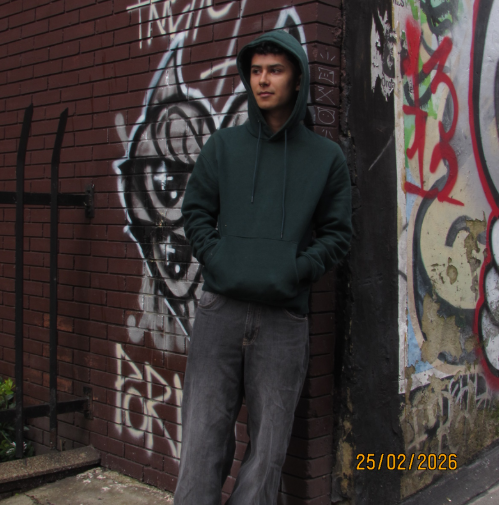
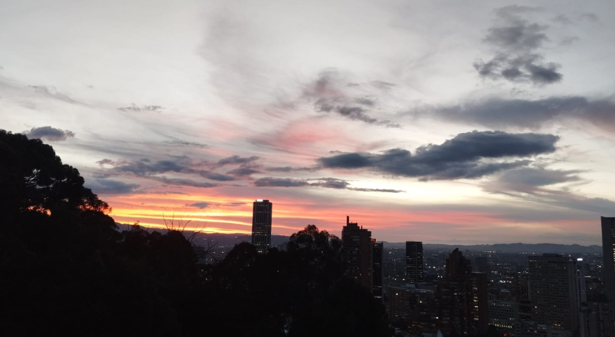
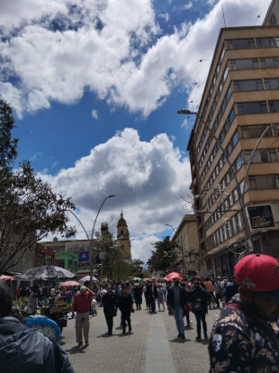
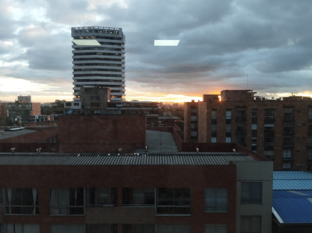
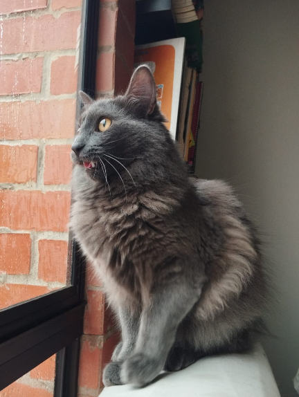
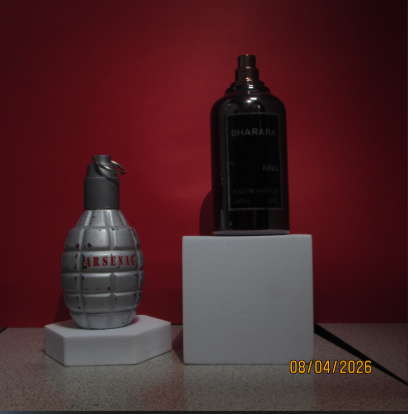
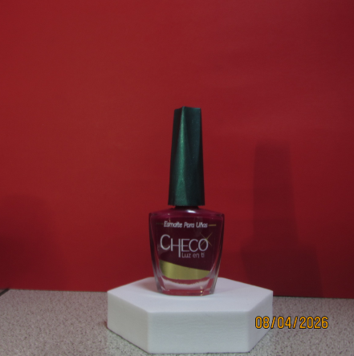

Portafolio fotográfico · 2026
Ingeniero electrónico y fotógrafo desde Bogotá. Una mirada que encuentra lo extraordinario en lo cotidiano.

Proyecto autoral
Statement
Hay lugares dentro de la universidad que uno aprende a conocer
no por su arquitectura, sino por lo que ocurrió en ellos.
Un pasillo donde se esperó un resultado, un rincón donde se celebró
con amigos después de una entrega, una sala donde un proyecto
se cayó a pedazos y hubo que empezar de nuevo.
Este trabajo nació de la necesidad de registrar esos espacios
antes de dejarlos atrás. No como documento, sino como memoria.
Cada imagen guarda algo que la institución no sabe que tiene:
la frustración de una noche sin dormir, la risa de alguien
que ya no estudia aquí, la quietud de un lugar vacío
que alguna vez estuvo lleno de tensión.
Fotografiar la universidad fue una forma de despedirme
de una versión de mí mismo que solo existe en esos muros.

02
03
04Portafolio
Selección de trabajos realizados durante el primer y segundo corte del semestre. Cada serie responde a un ejercicio distinto de observación.


